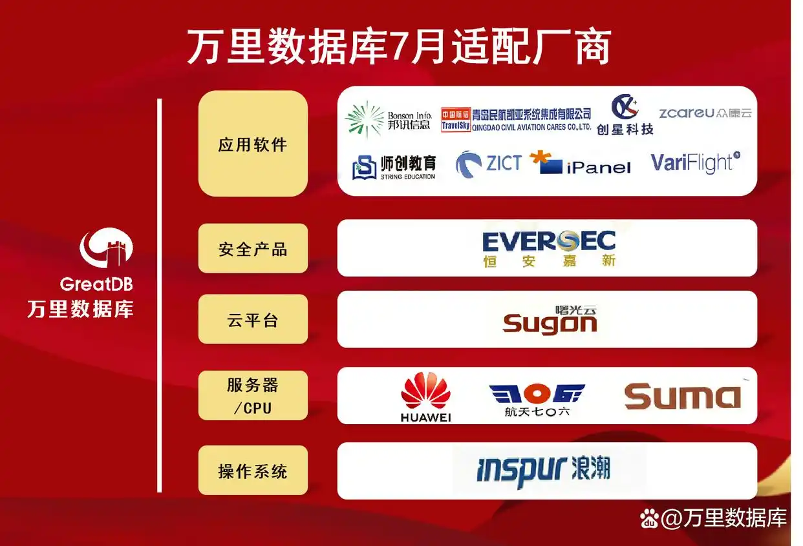
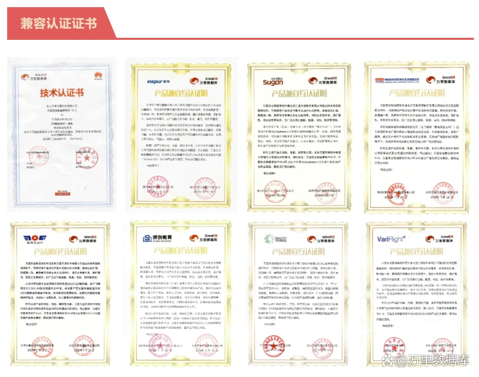

兼容月报｜行业应用多元化兼容 万里数据库7月适配成果一览
共筑国产生态圈
数字基础设施的建设离不开产业链上下游生态企业的携手共进。万里数据库作为国产数据库领先品牌，自成立以来，积极参与信创产业生态建设，在国产生态兼容适配建设、生态融合等方面持续发力，全面推进从芯片到操作系统、服务器、中间件及各类应用软件的全方位兼容适配工作，共筑国产生态圈。
基于此背景，万里数据库未来将持续发布生态适配月报，诚邀广大产业链伙伴，共同见证基于万里安全数据库GreatDB的生态建设成果。
2024年7月，万里数据库与华为、浪潮、中科曙光、中科可控、航天706所、青岛凯亚、广州邦讯、飞友科技等16家生态伙伴累计完成41款产品兼容适配，充分证明万里安全数据库GreatDB产品具备高度的成熟性与稳定性，以及对国产生态各链条产品的高度兼容性。通过近5年国产生态适配方面的持续投入与建设，万里数据库生态体系进一步完善壮大，以持续的行动与努力为构建多元、协同、共赢的全国产生态链添砖加瓦。

7月适配认证列表
此次适配产品覆盖操作系统、服务器、CPU、云平台、安全产品以及应用软件等多个产业链环节。测试结果表明：万里安全数据库GreatDB与上述产品完全兼容，整体运行稳定高效。GreatDB用产品技术能力，验证了从底层基础软硬件到上层业务应用的全栈兼容能力，有力支撑信创产业稳步发展。

应用生态多点开花 赋能诸多重点行业
尤其值得一提的是，万里数据库7月与9家应用软件厂商完成了兼容适配，实现了医疗、教育、航空、交通等多个重点行业的多元化覆盖，支撑上层应用场景实现国产化转型，包括：
航空行业：青岛凯亚、飞友科技
医疗行业：创星科技、中兴网信、众康云
教育行业：师创教育、智信佳
交通行业：广州邦讯
其中，万里数据库与航天领域的头部ISV厂商青岛凯亚完成了全栈产品线的兼容适配工作。万里数据库核心的数据库产品安全数据库软件GreatDB与青岛凯亚自主研发的掌控机场系统、航班信息显示系统、航站楼管理系统等12款应用软件实现了全面兼容，为航天重点产业的国产化转型提供坚实技术支撑与助力，促进航天产业腾飞。
此次万里安全数据库GreatDB与产业链十多家生态伙伴的数十款产品完成兼容互认证，是多方产品性能卓越、实力过硬的有力表现，也显示了万里数据库对国产适配的快速响应能力，为未来多方在关键基础设施建设、重点行业应用、云原生领域、信创背景下展开更广泛的合作奠定基础。
随着生态兼容认证工作的不断推进，万里数据库未来将进一步加速国产生态圈建设步伐，持续发挥技术优势，携手众多生态合作伙伴在底层通用的数据库基础软件领域不断创新，深度融合主流的信创云平台、操作系统、芯片、应用软件等生态链产品，共同推动国产化信息技术应用创新建设，持续助力自主可信生态链产业化发展。